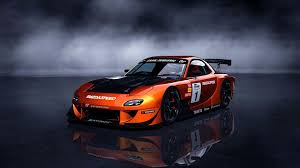
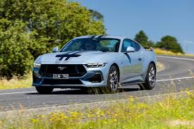
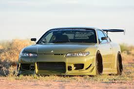

| Datos |
Generacion | Pasion sobre ruedas |
Evolucion |
Tipos Autos |
Historia |
carros clasicos |
Arte |
Carros |
Videos |
Formulario | Coches deportivos |
| Paises | Nombres de Autos |
|---|---|
| Japon | Mazda Rx7 |
| Estados unidos | Ford Mustang |
| Japon | Nissan Silvia s15 |
| Japon | Nissan Gtr34 |
El Mazda RX-7 es un automóvil deportivo producido por el fabricante japonés Mazda Motor Corporation (マツダ株式会社 Matsuda Kabushiki-gaisha?) entre los años 1978 y 2002. Rivalizaba con otros deportivos, tales como: el Toyota Supra, el Honda NSX, la línea Nissan Fairlady Z, el Nissan Skyline, entre otros. El RX-7 era un reemplazo directo para el RX-4 y todos los deportivos con motor Wankel de la gama de Mazda, con excepción del Mazda Cosmo. Podía ser biplaza o de cuatro plazas, según el mercado, en carrocería cupé de dos puertas. También hubo una versión cabriolet, únicamente disponible en la segunda generación. En resumen el Mazda RX-7 es un automóvil que ha dejado una marca indeleble en la historia del automovilismo deportivo, destacando por su motor único y su rendimiento impresionante.[7] Historia Motor rotativo 13B-REW. Para encontrar su origen, tenemos que retrotraernos a otro modelo: el Mazda Cosmo, nacido a mediados de la década de los 60 y no es que fuera su predecesor per se, pero sí que estableció algunos de los pilares fundamentales de la saga (como el motor rotativo) y de él, en sus generaciones posteriores, derivó el RX-7. Fue a finales de la década de 1970, específicamente en 1978, cuando Mazda debutó al RX-7, era un automóvil deportivo que se distinguió por tener un motor rotativo,[8] con el que contribuyó a la marca japonesa a triunfar en el automovilismo.

Ford presentó el Thunderbird, que nació para competir directamente con el Chevrolet Corvette, el clásico superdeportivo estadounidense. El Thunderbird caló hondo en los clientes de la época, pero a comienzos de los años 1960 comenzó a perder atractivo. Dado este motivo, Lee Iacocca, vicepresidente de la Ford Motor Company junto a su equipo de Ford, comenzó a diseñar el sustituto del Thunderbird, el cual debía superar los estándares de este vehículo. En 1961 Lee Iacocca vicepresidente de Ford Motor Company fundó el Comité Fairlane, cuyo punto de reunión era el hotel Fairlane, para iniciar la búsqueda del auto casi perfecto. Como punto de partida, el coche debía ser más ligero comparado con vehículos pesados de 2 toneladas que se usaban en esa época, tenía que ser sencillo, económicamente accesible, y con todas las comodidades típicas de un vehículo de clase media; por lo tanto debía tener asientos individuales, suaves acabados y palanca de cambios en el suelo. Regularmente, para atraer la mayor cantidad de público posible, este auto debería tener todas las opciones disponibles de accesorios, tipos de carrocería hardtop, fastback y cabriolet, color del coche, techo de vinilo, motor, transmisión manual o automática, etc. Ante la enorme cantidad de variantes del nuevo modelo, no hubo el tiempo suficiente para crear una base mecánica relativamente nueva. Varios elementos del chasis y suspensión fueron recuperados del Ford Falcon y algunas otras partes de otros más modelos de la marca. Terminado los trabajos de diseño, se comenzó una labor de mucha importancia: el famoso "marketing" o mercadotecnia. Una forma de promoción fueron las "fotos secretas" del modelo a prueba, que aumentaron notablemente el interés por conocer el nuevo diamante de Ford. De esta manera se lanzó el modelo 64½ durante la Feria Mundial de Nueva York el 17 de abril de 1964. El nacimiento de una leyenda Vista trasera del Hardtop de 1965. Vista trasera del Fastback GT de 1965. Descapotable de 1965 en Ocean Village

Japón vio una nueva versión del Silvia: el S15 en 1999, ahora con 250 CV (247 HP; 184 kW) a 6 400 rpm y 28 kg·m (203 lb·pie) a 4 800 rpm de par con motor de 4 cilindros en línea,[14] gracias a una mejora con un turbocompresor. Y sin turbo, daba 165 CV (163 HP; 121 kW).[15] El Silvia S15 incluyó un estilo agresivo tanto por dentro como por fuera, actualizando el estilismo que siempre ha tenido el Silvia con un toque moderno. Se redujeron las dimensiones de la carrocería, por lo que pasaría a ser un compacto. El Silvia S15 se simplificó a dos modelos, el Spec-S y el Spec-R, ambos con la variante «Aero» con mayores alerones y faldones. El Nissan Silvia S15 solo se vendió en Japón, Australia y Nueva Zelanda. Variantes Spec-R.
